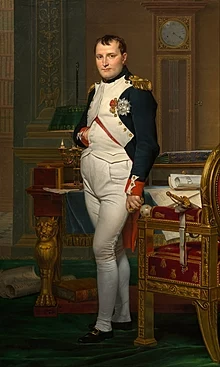

Napoleon Bonaparte[b] (born Napoleone di Buonaparte;[1][c] 15 August 1769 – 5 May 1821), later known by his regnal name Napoleon I, was a French military officer and statesman who rose to prominence during the French Revolution and led a series of successful campaigns across Europe during the French Revolutionary and Napoleonic Wars from 1796 to 1815. He was the leader of the French Republic as First Consul from 1799 to 1804, then of the French Empire as Emperor of the French from 1804 to 1814, and briefly again in 1815.
